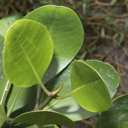
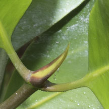
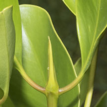
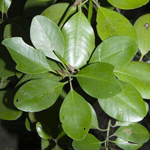
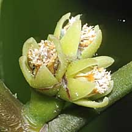
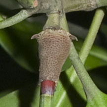

|
|
| plants text index | photo index |
| mangroves |
| Tengar Ceriops sp. Family Rhizophoraceae updated Jan 2013 Where seen? Usually neat and tidy trees or bushes. Sometimes seen in our mangroves. Features: A short tree sometimes just a bush, older plants may have well developed knee roots. The leaves are thick and spatula-shaped so they are sometimes mistaken for Teruntum (Lumnitzera sp.). Tengar (Ceriops sp.) have a flattened knife-like stipule (leaf bud at the tip of a branch). For young plants, it is difficult to be sure whether they are Tengar putih or Tengar merah without the flowers and propagules. To distinguish from Pisang-pisang (Kandelia candel), Tengar leaf stalks usually not pinkish. Human uses: Tengar (Ceriops tagal) is valued as timber, firewood and a source of dyes. It is also used in traditional medicine. Status and threats: Tengar putih (Ceriops tagal) is listed as 'Vulnerable' and Tengar merah (Ceriops zippeliana) as 'Endangered' on the Red List of threatened plants of Singapore. |
 Pulau Semakau, Jan 09 |
 |
 Tengar species have a flattened knife-like stipule. |
 Tengar species have a flattened knife-like stipule. |
|
Tengar
putih
Ceriops tagal |
||
 Leaves spatula-shaped. |
 Flowers small, many on one stalk. |
 Brown 'fruit' is smooth. White collar on 'ripe' propagule. |
|
Tengar
merah
Ceriops zippeliana |
||
|
 Leaves oval. |
 Flowers small, a few on one stalk. |
 Brown 'fruit' has textured surface. Red collar on 'ripe' propagule. |
|
Links
References
|